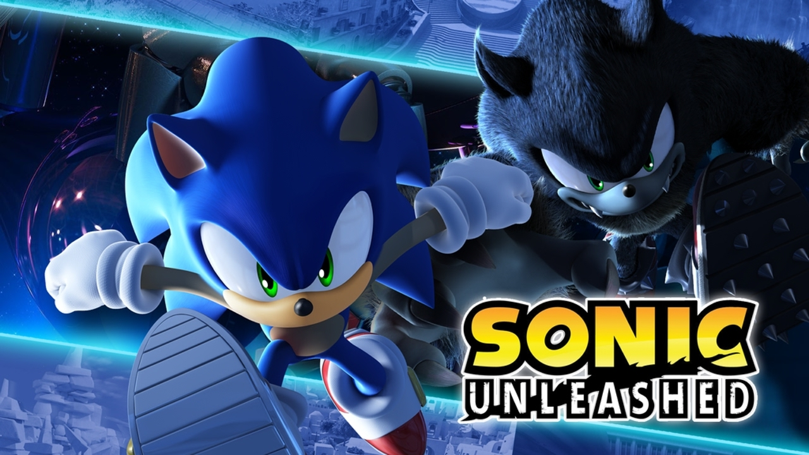
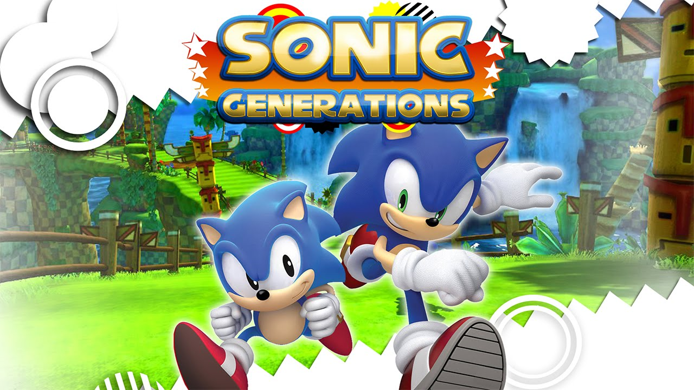
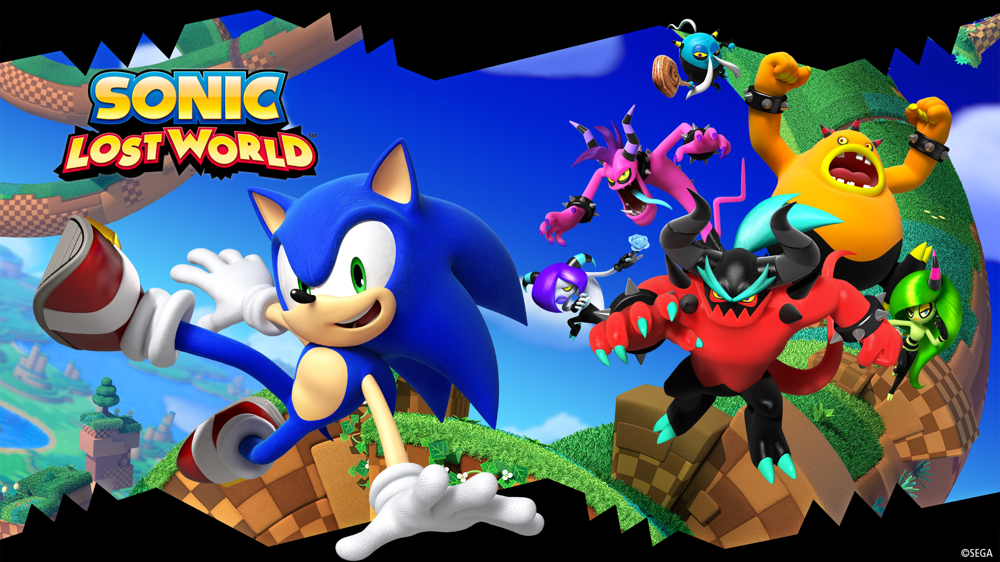
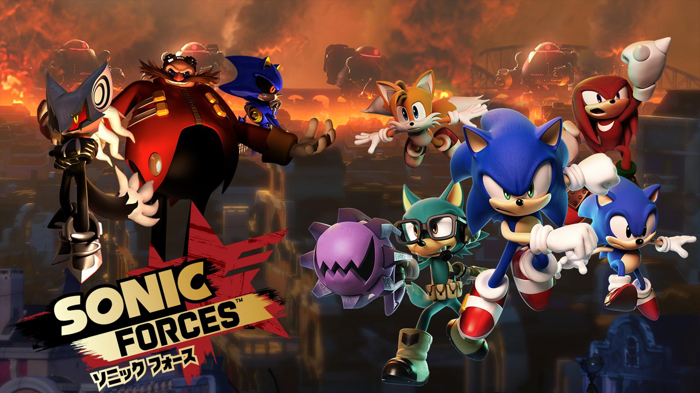

GERAÇÃO MODERNA!
A terceira geração do ouriço, esta é conhecida por seus jogos se focarem muito mais na velocidade, e pouco na exploração da fase. Sua principal mecânica é a de Boost, que permite Sonic atingir a velocidade da luz ou próximo a isso, além disso, essa geração possui sério problemas com seus títulos, sendo alguns bastante controversos com a crítica especializada e pública, assim como outros muito bem avaliados, seus principais títulos são:
Sonic Unleashed ( 2008 )
O primeiro título da geração moderna, lançado em 2008, foi um título um pouco controverso devido a um fato: O jogo possuía 2 modos de jogo, o primeiro sendo de dia, com um Sonic normal, no qual a gameplay tinha como foco a velocidade e pouca exploração do ambiente. Enquanto o segundo é de noite, com o Sonic Werehog, com pouco foco em velocidade e mais na exploração do ambiente, além de possuir fortes elementos do gênero Hack and Slash.
Sonic Colors ( 2010 )

Segundo título da geração, foi em 2010 que Sonic Colors veio ao mundo, foi um jogo muito bem aceito pela crítica especializada e pública, misturou a jogabilidade de velocidade extrema com a mecânica dos Wisps, 5 personagens especiais que aliados a Sonic lhe concedem uma habilidade especial, indo de se transformar em espinhos até flutuar.
Sonic Generations ( 2011 )
Considerado o melhor título dessa geração, Sonic Generations veio em 2011, e ficou conhecido especialmente por possuir 2 tipos de jogabilidades diferentes, e 2 Sonics! Neste jogo você pode jogar com o Sonic moderno, passando pelas fases em alta velocidade, e ao mesmo tempo com o Sonic Clássico, explorando a fase e tendo pequenos picos de alta velocidade. Além disso, possuiu uma ótima história com um bom enredo, além de trazer todos os personagens criados pela franquia até aquele ano.
Sonic Lost World ( 2013 )
Em 2013, Sonic Lost World foi lançado, e a aposta da SEGA de criar um jogo com um estilo de gameplay parecido com o de Super Mario Galaxy 3 acabou trazendo críticas bastantes negativas vindo do lado público, enquanto o especializado já fazia até alguns elogios. A jogabilidade é bem divididade entre velocidade e exploração, porém em um cenário bastante linear, diferente dos jogos da Geração Adventure, além disso, muitos não gostaram da física do jogo, dizendo que ela é "travada".
Sonic Forces ( 2017 )
Foi o último título desta geração, foi uma aposta da SEGA em trazer muito do que foi visto em Sonic Generations, como as 2 jogabilidades tanto com Sonic Moderno e Sonic Clássico, junto de uma nova jogabilidade, que seria com um personagem criado pelo próprio jogador. No final, oque aconteceu é que o jogo sofreu bastante quanto a bugs, além de que a terceira jogabilidade não agradou muito seus jogadores.